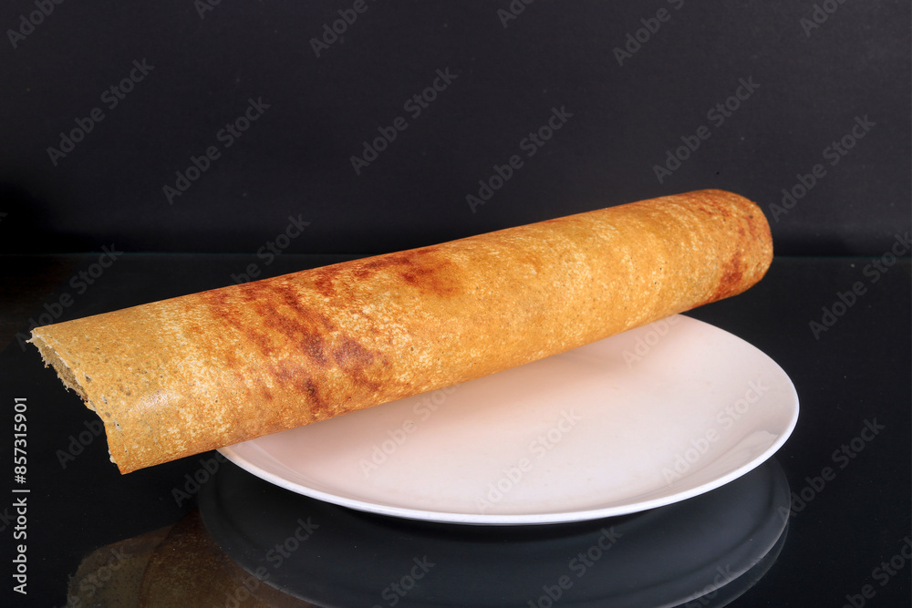

Dosa

Description
The above mentioned recipe is Dosa which is very famous in south India. Almost every south Indian like this recipe and every hotel or resturanet contains this recipe. It is very tasty which gives you spice taste and makes you to enjoy the recipe
It wont cost much the maximum cost of a plate dosa will be of fifty rupees. Which will satisfy and makes you comfortable to spend the money on the recipe. As it does not cost much almost all people like to have dosa.
Ingredients
- Rice: 1 cup (typically short-grain rice or parboiled rice is used)
- Urad Dal (Black Gram Split Pulses): 1/4 cup
- Fenugreek Seeds: 1/2 teaspoon (optional, but helps in fermentation and flavor)
- Water: As needed for soaking and grinding
- Salt: To taste
- Oil or Ghee: For cooking (use a small amount to grease the pan)
Steps to prepare Dosa
- Soak Ingredients
- Rinse and Soak
- Grind the Batter
- Drain
- Gring
- Ferment the Batter
- Prepare for Cooking
- Preheat the Pan
- Grease the Pan
- Cook the Dosa
- Pour the Batter
- Spread the Batter
- Cook